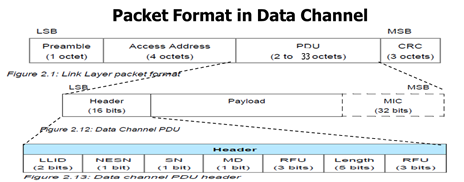

[[低功耗蓝牙开发权威指南]]
-
BLE与经典BT的区别
-
链路层的确认机制
- 经典BT中， 接收机在下一个传输机会到来之前必须对数据包进行确认
- BLE中， 发送的每一个数据包都能确认上一个数据包， 设备再也不必立即发送应答。
-
链路层的确认机制
-
无连模式
- BLE中， 用户只在需要发送数据的时候才建立连接， 其他时候设备可以长期处于断开连接状态。 L2cap层必须使用固定信道， 免去建立信道的时间
- 经典BT， 每个应用必须先建立连接才能使用， l2cap层建立连接是动态的， 过程复杂。
-
认证的时机
- 经典BT中， 认证的行为是在l2cap信道建立时发起的
- BLE中， 服务器端只需要回应每一条请求， 复杂的认证工作由客户端执行， 并在必要时重发最初的请求
CSR Mesh
CSR Mesh技术由CSR剑桥大学研发团队打造，利用星型网络和中继技术，每个网络可以连接超过65000个节点，网络和网络还可以互连， 最终可将无数Bluetooth Smart设备通过同一手机、平板电脑或PC进行互联或直接操控。为业内首创。它的出现就是为了干掉Zigbee。
它的功耗只有Zigbee的二十分之一，而且它无需网关，可以用手机平板控制，非常简单易用
该方案面向智能家居及物联网应用。它通过将蓝牙配置与控制协议整合到CSR成熟的Bluetooth Smart 产品，如CSR101x? 及CSR8811? 当中，使消费者在任何地点都能操控家里的Bluetooth Smart设备，包括灯光、供暖设备、家用电器以及安防系统。
CSR Mesh采取的是一种广播技术 ，类似大海中的波涛，其节点和节点之间的距离是50米，我们的芯片有中继功能可以将信号不断传输 到更远，当控制信号到达第一波被控设备后，它们会将信号再次广播出去，传给第二波设备，然后是第三波。。。。。而这些设备采集 到的温度、红外等信号也可以回传回来。
From Wibree to BLE
- 诺基亚的Wibree来了谁将死去
- [[Wibree论坛并入蓝牙技术联盟]]
BT4.2 Features
- LE Data Packet Length Extension
- LE Secure Connections
- Link Layer Privacy
- Link Layer Extended Filter Policies
The term for ‘LE privacy v1.2’ is changed to Link Layer Privacy and Link Layer Extended Filter Policies.
ble data extension VS ble 2Mbps rate
以 throughput 考量, ble data extension 的效益是比 ble 2Mbps rate 还要大, 底下是最大的 ble packet, 考量 maximum asymmetric traffic :
Phy rate 1M : (27 x 8) / (328/1 + 150 + 80/1 + 150) = 0.305 Mbps
Phy rate 2M : (27 x 8) / (328/2 + 150 + 80/2 + 150) = 0.428Mbps
Phy rate 1M + data extension : (251 x 8) / (2120/1 + 150 + 80/1 + 150) = 0.8032Mbps

BLE in Win8+
- https://social.msdn.microsoft.com/Forums/windowsdesktop/en-US/home?searchTerm=Windows%208%2C%20Bluetooth%20LE%20and%20BluetoothFindFirstDevice%2FBluetoothFindNextDevice%2FBluetoothFindDeviceClose
- The Windows 8 Bluetooth GATT apis requires that the device be paired using the built-in UI and does not allow application to connect to an arbitrary Bluetooth LE device.
- Windows上BLE的缺点， 只能通过Buildin UI来scan， pairy设备， 不能将Classic Device和BLE Device区别开来
- 对于BLE设备来说， 有很多情景并不需要配对，如iBeacon，它只支持Advertising，IPhone只需要Scan到它并从Advertising中得到信息就可以了。Windows中对类似iBeacon的应用就不能提供支持
comments powered by Disqus